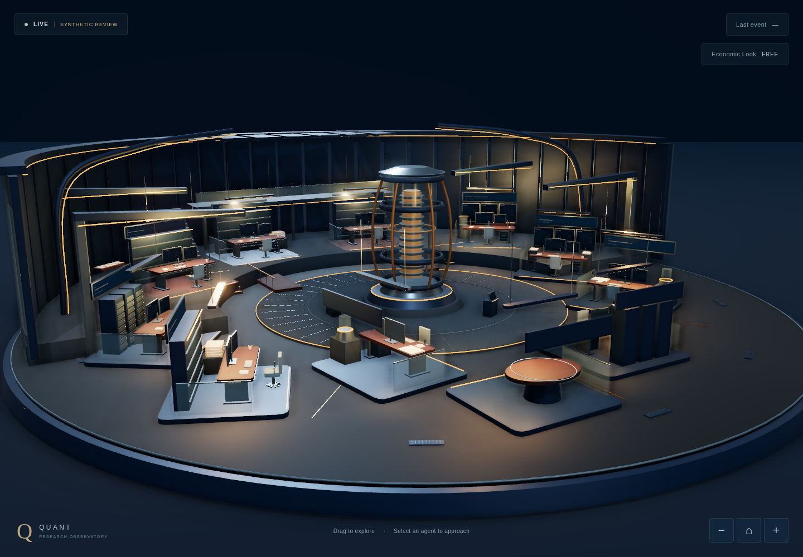
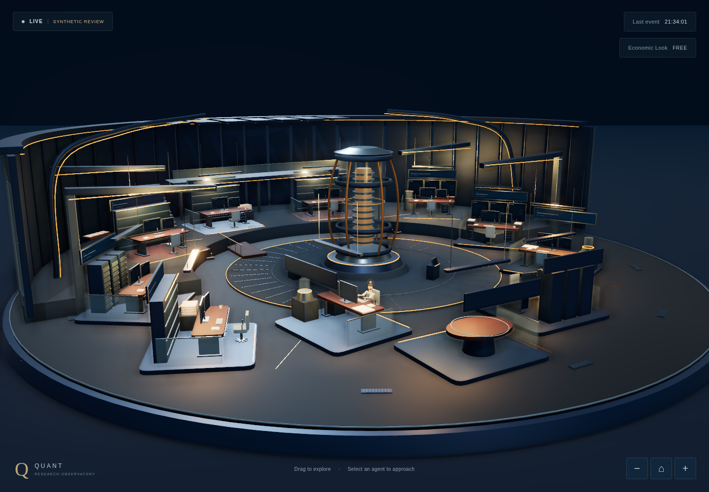
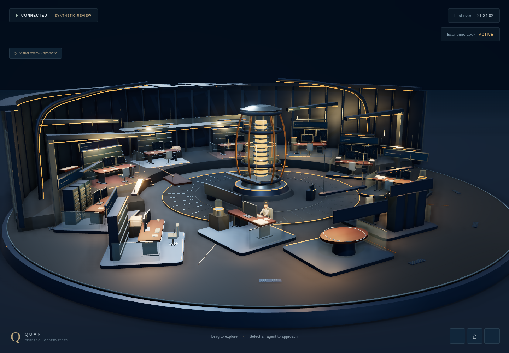
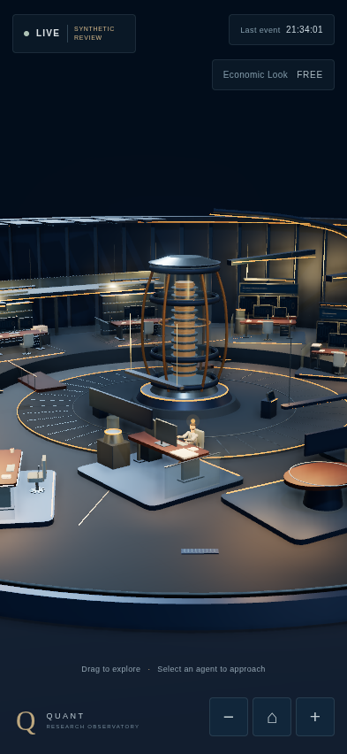
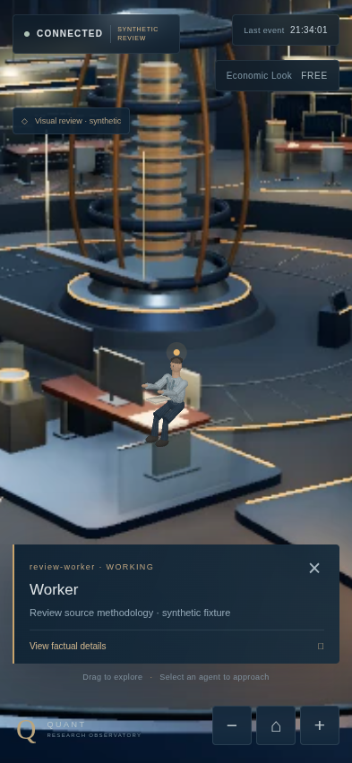

All activity is synthetic and explicitly marked. A/B/C/E exercise the real live entry, native mapper and reducer using a browser-only EventSource mock. D is an explicit Economic Look reducer fixture. No production event, research result or deployment is claimed.
PRODUCTION_REPLACEMENT_AUTHORIZED = FALSE · VISUAL_REVIEW_REQUIRED = TRUE





Capture provenance · Browser checks · Interactive isolated review